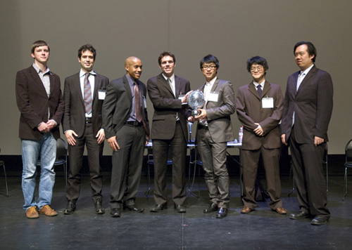
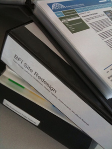
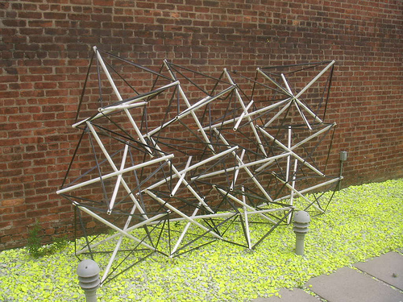
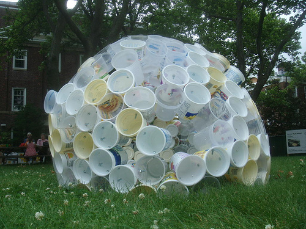
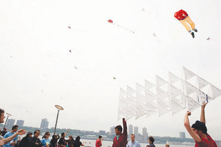
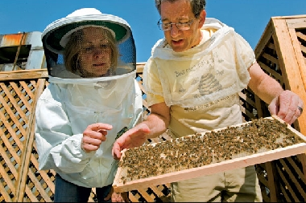
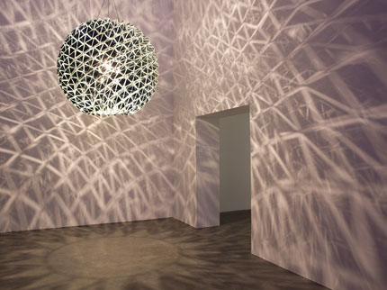

Welcome to Vol. 10 No. 7 of Design Science News, the e-bulletin of the Buckminster Fuller Institute
Design Science News brings you important updates about BFI’s programs and activities as well as news from around the world related to humanity’s option for success and comprehensive design science.The 2009 Buckminster Fuller Challenge Prize is awarded to MIT’s Smart Cities Group in Chicago!
June 6th, 2009: The second annual Buckminster Fuller Challenge prize was awarded to MIT's Smart Cities group for their winning project Sustainable Personal Mobility and Mobility on Demand. The team of seven students received the Omni-Oculi prize sculpture and a check for $100,000. The ceremony at the Museum of Contemporary Art, Chicago included presentations by the winning team, the runner-up project Dreaming New Mexico, represented by Kenny Ausubel of the Bioneers, and a panel discussion with 2009 jurors Bill Browning and Edie Farwell moderated by Susan Szenasy of Metropolis Magazine.
Following the ceremony was a reception within the Merchandise Mart, where international designer Bruce Mau gave a presentation in front of Fuller's 25' Fly's Eye dome.
More photos from Saturday's events here.
The weekend concluded the following morning with a demonstration of Buckminster Fuller’s Rowing Needles upon the Chicago River. The event was organized by Carl Solway Gallery and the Chicago Department of Cultural Affairs.
More photos from Sunday’s rowing event here. Congrats to the MIT Team and thanks to everyone that helped to make the events so successful!
The 2010 Buckminster Fuller Challenge begins August 17th
Mark your Calendars! The 2010 cycle of the Buckminster Fuller Challenge will be launched with the release of the Call for Proposals on August 17th. Email challenge (at) bfi (dot) org to receive the official notification.
Idea Index, case study for Stanford University Media X symposium
August 12th-14th Stanford University’s Media X will host “Collaborative Visualization for Collective, Connective and Distributed Intelligence” a workshop to bring together visualization vanguards from the leading edge of science mapping, collaborative visual sensemaking, social network analysis and the emerging semantic web. The goal of this collabortory to catalyze multi-institutional research projects involving the visualization of scholarly data, design science strategies and innovative sustainability networks. One of the three case studies for the workshop will be the Idea Index. The event is being organized by Jeffrey Heer, Katy Borner, and close BFI associate Bonnie Devarco.
Upcoming redesign of BFI.ORG
Following in-depth analyses of BFI.ORG from his Information Architecture and Interactive Design students, Professor David Walczyk, of The Pratt Institute School of Information and Library Science, has assembled an interdisciplinary team of former students and colleagues to help BFI redesign our website. We are very impressed with the students examination and suggestions and look forward to working with Professor Walczyk in the re-launch of our website. Stay Tuned!
Summer Installations and projects by BFI’s Prototype Program:
On July 19th, Prototype volunteers led a workshop at The Sculpture Center in Long Island City, New York in the exploration of DIY Tensegrity structures. Using commonly discarded materials such as old bicycle tire tubes and pvc piping, participants spent the afternoon studying various Tensegrity patterns before creating our own creation; a Tensegrity wall from octahedral modules. The event, entitled “Doing More with Mess” was a put on in conjunction with the current exhibition, The University of Trash, a project by Michael Cataloi and Nils Norman.

BFI joined with hundreds of organizations and individuals that helped transform NYC’s Governors Island into an annual celebration of participatory art and culture where anything is possible, a weekend long event known as Figment*. Our installation re-purposed discarded plastic containers bearing the recycling number 5 (a non recyclable material under current NYC sanitation guidelines) in a closest packing arrangement to form a spherical structure. See more photos of ‘Prototype 5’ here.

In May, Prototype entered Fly NY 2009 a first annual international kite design competition sponsored by the New York City Parks Department. Entering with a large tetrahedral kite constructed from wooden dowels and postal envelopes, the BFI team attracted much attention, a small amount of hang time, and received a runner-up award. All participating kites were auctioned off, with proceeds going to support Architecture for Humanity. Read the Metropolis Magazine article about the event here.
The Prototype Program involves local participants in a collaborative and tactile learning mission; experimentation with structure. The program is open to the public and we invite all curious individuals to lend a hand or contribute an idea to the development and realization of our projects. For more information about Prototype please contact Will Elkins will (at) bfi (dot) org.
TRENDS & PERSPECTIVES
The Summer Of Algae
All of a sudden, the sun is shining on early-stage companies developing algae-based fuel. Call it the summer of algae.
Oil giant ExxonMobil’s commitment to invest $600 million in research and development alongside venture-backed Synthetic Genomics Inc. is just another in a string of recent announcements of either new fund-raises or strategic partnership with established companies.
In late June, start-up Algenol Biofuels Inc. formed a partnership with The Dow Chemical Co. to develop a $50 million, algae-to-fuel pilot-scale plant employing Algenol’s technology, which involves linking the production of sugar from photosynthesis with the enzymes required to produce ethanol within an individual blue-green algae cell. (Source: WSJ)
Related:
» Big Oil Turns To Algae
» Algae get Exxons Big Biofuel Bet
City Bees Are All the Buzz
Honeybees may not be the first thing that come to mind when you think of Brooklyn. Yet here is Yeshwant Chitalkar, high on a rooftop in the Red Hook section of the New York borough, opening a bright blue hive to check on its queen. The vista is a mix of parks, light industrial areas, and housing projects. Dr. Chitalkar works methodically, barehanded, carefully lifting out the hive’s frames, which are covered in a velvety, undulating layer of bees.
He is one of a growing number of urbanites who keep bees in cities across the country. Their motivations vary: Some are worried about the environmental impact of fewer bees to pollinate food crops. And some are urban gardeners who want to make their gardens more productive. Others say beekeeping is a way to connect with nature even in the heart of the concrete jungle.
Oh, and there is the honey, too. Counterintuitive as it might seem, urban hives are generally as productive and healthy as rural ones. In a good year, one hive can produce up to 200 pounds of honey. (Source: : Christian Science Monitor)
Related:
» Urban Weather Stations Bee Conservation and Green Roofs
» Urban Beekeeping Is All The Buzz
RESOURCES
Build a Geodesic Dome Solar Greenhouse to Grow Your Own Food

What do you do when you want to grow your own food, but live more than a mile above sea level in Colorado? That is the question my dad wanted to answer when he started this project about a year ago: Living at 7,750 feet above sea level, with a summer growing season of about 80 days between killing freezes, how can you grow your own food? His answer: A geodesic dome solar greenhouse.
View the Slideshow on TreeHugger
The Bathroom Reinvented
2009 Buckminster Fuller Challenge Finalist Virginia Gardiner interviewed by Dwell Magazine about her plumbing free toilet, the Gardiner CH4. In the video Gardiner reviews some new ideas for enabling better sanitation in even the most remote areas of the world, and breaks down the details on turning human waste into a high-value commodity.
Read the full article on Dwell.com.
New Views on R. Buckminster Fuller
A serious scholarly look at the work of R. Buckminster Fuller is long overdue. While Fuller himself wrote and published many volumes, and several biographies were written about him, there is little research that contributes to a critical understanding of his work and its historical significance. The 1,300-plus linear feet of material contained in the Fuller Archive at Stanford, including papers, photographs, audio and video recordings, and models, has been recently organized and described by the Department of Special Collections, and is ready to be explored by a new generation of scholars. This volume, edited by Hsiao-Yun Chu and Roberto G. Trujillo, discusses Fuller and his work in the context of larger social and cultural patterns.
Read more about this recent Stanford University Press publication.
Artist Olafur Eliasson Interviewed by the Architects Newspaper
The work and ideas of Buckminster Fuller have been an important touchstone for many of today’s architects, designers, and artists. In her essay for the Whitney Museum’s publication that accompanied the recent Fuller exhibition, Elizabeth Smith, chief curator at Chicago’s Museum of Contemporary Art (MCA), traced these influences on a current generation, including Danish-born artist Olafur Eliasson. With major exhibitions on both Fuller and Eliasson now on view at the MCA, AN asked Smith to discuss Fuller’s continued relevance, interest, and significance with Eliasson. Read the full interview here.
EVENTS
“Across the Generations: Legacies of Hope and Meaning”
September 11-13, 2009, Fordham University will host “Across the Generations: Legacies of Hope and Meaning”, an international conference sponsored by the Institute of General Semantics. The conference is co-sponsored by the Buckminster Fuller Institute, the New York Society for General Semantics, the Media Ecology Association, Friends of the Institute of Noetic Sciences, the Lifwynn Foundation for Social Research, the Taos Institute, and Fordham University.
To register for and learn more about the symposium visit the website for The Institute of General Semantics. September 11-13 at Fordham University's Lincoln Center campus, Pope Auditorium, Lowenstein Hall (corner of W. 60th St. and Columbus Ave. NY, NY).
The 13th Annual D.U.M.B.O. Art Under the Bridge Festival
BFI’s Prototype Program will be a featured participant of the D.U.M.B.O Art Under the Bridge Festival, September 25-27, 2009. Our installation “Climbing Coordinates” will transform a diagram of geodesic coordinates into an interactive piece of public artwork, allowing visitors a literal hands-on exploration of geometric networks. Visit the DUMBO Arts Center website for more information about the festival.Get updates on BFI and our work on your favorite social networking sites
BFI has joined Facebook and Twitter! Keep up to date on all of our programs and events by connecting with us today!
» BFI on Facebook
» Challenge on Facebook
» BFI on Twitter
To unsubscribe from this newsletter, send email to this address.
To never receive email from The Buckminster Fuller Institute, send email to this address.
This email is sent from:
The Buckminster Fuller Institute
{domain.address}